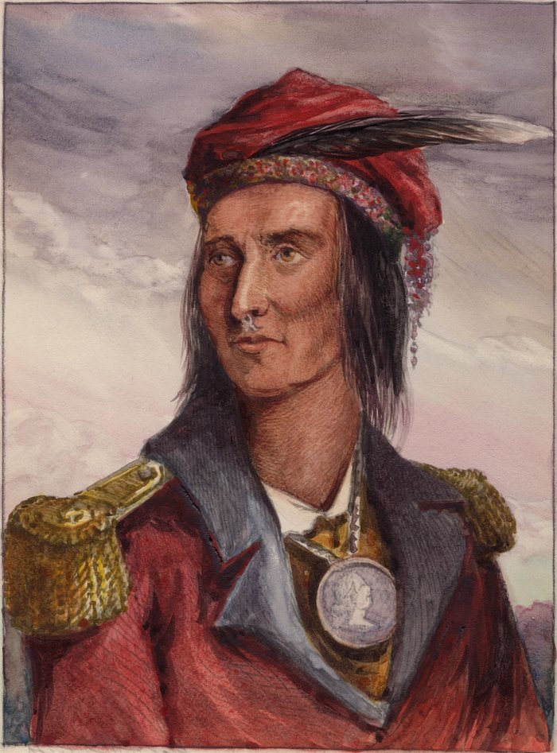

THE PANTHER ACROSS THE SKY
The treaties were vows, witnessed by Heaven and broken by men — and two centuries of broken vows have compounded into a grudge with a name.

THE PANTHER ACROSS THE SKY
The treaties were vows, witnessed by Heaven and broken by men — and two centuries of broken vows have compounded into a grudge with a name.
Feature map
Level-by-level features, as the figure refined them.
The Confederacy
passive
Tier IV · War-Leader Buffer · Suggested CE ability: CHA · Primary verb: Gather.
Willing creatures within 60 ft of Tecumseh are the Confederacy. While in the aura: - No member can be surprised while at least one conscious member is aware of danger — the watch is shared. - Members can communicate silently: simple concepts only — intent, direction, warning, now. Not language. The line, thinking. - When a member takes damage, Tecumseh immediately knows the direction and distance of the source. The pain reports. The formation listens. At any site of a broken treaty — Greenville, Fort Wayne, the Thames — the aura extends to 120 ft, Shared Strikes costs 1 CE, and Tecumseh has advantage on Charisma checks: the land testifies. No CE cost. The formation is the technique's foundation — everything else is built on it.
Panther's Crossing
bonus action, 2 CE
Tecumseh marks a point he can see within 120 ft. A burning streak crosses the sky — visible for miles, impossible to miss, impossible to misread. At the start of his next turn, cursed energy strikes the mark: each creature within 10 ft makes a DEX save vs the technique DC, taking 3d8 + CHA modifier force damage on failure, half on success. The telegraph is the willing-decline valve: Heaven watches it come, and so does everyone else. Usable a number of times per long rest equal to his proficiency bonus.
Shared Strikes
reaction, 2 CE
When a willing creature in the aura hits with an attack, Tecumseh lets a different willing creature in the aura make one weapon attack as a reaction against the same target. The confederacy answers as one. Once per round.
The Fallen Lend Their Strength
passive
When a willing creature in the aura drops to 0 HP, every other willing creature in the aura gains temporary HP equal to CHA modifier + proficiency bonus and +1 to attack rolls until the start of Tecumseh's next turn. The fallen do not leave the line. They become it. Once per round.
No Tribe Stands Alone
action, 4 CE
For 1 minute: the Confederacy aura extends to 120 ft; when a member would be moved against their will, another willing member in the aura may take the movement instead (no action required — the line shifts); opportunity attacks against members moving inside the aura have disadvantage. The formation holds.
The Council Fire
action, 3 CE, once per short rest
Tecumseh kindles a council fire — cursed flame in a 10-ft radius that burns for 1 hour, needing no fuel. While it burns, the Confederacy aura is anchored to the fire (120 ft) rather than to Tecumseh, and willing creatures that rest within 30 ft of it gain the benefits of a short rest in 10 minutes. The line has a hearth. Defend it accordingly.
The Comet Returns
action, 8 CE, once per day
For 1 minute, Tecumseh names up to PB willing creatures as the warband: - Members gain +2 to attack rolls and saving throws. - Shared Strikes costs 1 CE and may trigger twice per round. - When a warband member reduces an enemy to 0 HP, every other member gains temporary HP equal to half the killing damage (rounded down). The omen of his birth, returned as doctrine.
Maximum, Domain, or equivalent.
Capstone material.
Maximum: THE LAND HELD IN COMMON (action, 10 CE, once per long rest)
For 1 minute, the aura extends to 300 ft, and whenever a willing creature in the aura takes damage, Tecumseh may redistribute it among any willing creatures in the aura — he chooses the split after seeing the damage roll; no creature may be assigned more than half the total. The damage is never reduced. It is shared. That is the whole philosophy, weaponized. Additionally, a member reduced to 0 HP in the aura automatically stabilizes and returns to 1 HP at the start of Tecumseh's next turn — once per creature per Maximum. The land holds them. It was never for sale.
Domain Expansion: THE CONFEDERACY ASSEMBLED (full-turn action, 20 CE)
60-ft enclosed Domain. 800 clash points · 5-round burnout · 2-minute duration (per zack's Tier IV bookkeeping). - Sure-hit (allies): every willing creature in the Domain gains the Confederacy at its strongest — +2 to attacks, +2 to saves, temporary HP equal to CHA modifier + PB when the Domain opens, and Shared Strikes is free once per round. - Sure-hit (enemies): no enemy in the Domain can be hidden or invisible to the Confederacy. The formation sees as one. (Information, freely given — nothing unmade.) The muster, perfected: everyone who ever stood in the line, standing in it again.
- Clash points
- 800
- Burnout
- 5 rounds
- Duration
- 2 minutes
- Radius
- 60-ft enclosed Domain
- Activation ✦
- full-turn action
- CE cost ✦
- 20
✦ Canon: figure Domains are Specific Domains — the stated profile governs, not the player point-unlock table.
THE PANTHER NEVER LANDS (passive)
Tecumseh can never be surprised — not even alone, not even asleep; the sky is always watching for him. Once per long rest, when he would be reduced to 0 HP, the comet crosses the sky and he is reduced to 1 HP instead, immediately moving up to his speed without provoking opportunity attacks. And once per long rest: should he fall unconscious, his Confederacy aura persists for 1 minute without him (invented reset). The line holds. It learned how.
Build-defining options.
Historical-figure techniques grant no feats — the figure's art is complete as written, and the builder's feat picker excludes these techniques. Take the progression as the build.
Edge cases and shared systems.
Campaign canon notes